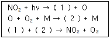
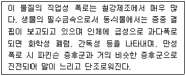
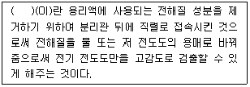
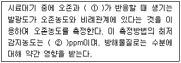
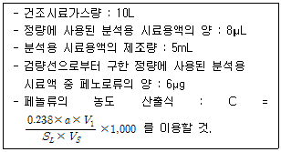
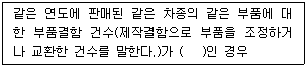

대기환경산업기사 (2012-03-04 기출문제)
1과목: 대기오염개론
1. 다음은 탄화수소가 관여하지 않을 때, 이산화질소의 광화학 반응을 나타낸 것이다. (1)과 (2)에 들어갈 물질을 바르게 짝지은 것은?

- (1) NO3, (2) NO
- (1) NO, (2) NO3
- (1) O3, (2) NO
- (1) NO, (2) O3
(정답률: 90%)

2. 지상 25m에서의 풍속이 10m/s일 때 지상 50m에서의 풍속은? (단, Deacon식을 이용하고, 풍속지수는 0.2를 적용)
- 16.8m/s
- 13.2m/s
- 11.5m/s
- 10.8m/s
(정답률: 84%)
3. 다음 중 바람과 관련한 설명으로 옳은 것은?
- 푄은 육지의 경사면을 따라 하강하는 바람의 일종으로 록키 산맥의 동쪽 경사면을 따라 흐르는 것을 치누크라고 한다.
- 곡풍은 경사면→계곡→주계곡으로 수렴하면서 풍속이 가속되기 때문에 낮에 산 위쪽으로 부는 산풍보다 일반적으로 더 강하다.
- 해륙풍 중 육풍은 주로 여름에 빈발하고 육지로 보통 15~20km 까지 분다.
- 전향력은 속력만 변화시킬뿐, 운동방향에는 아무런 영향을 미치지 않는다.
(정답률: 77%)
4. 대기오염물질이 식물에 미치는 영향으로 가장 거리가 먼 것은?
- SO2는 보통 백화현상에 의하여 맥간반점으로 형성한다.
- CO는 이상낙엽과 새 나뭇가지의 성장저해 및 생장억제를 유발하며, 스위트피는 CO에 가장 민감한 식물로서 보통 0.1ppm에서 그 피해가 인정된다.
- H2S는 어린 잎과 새싹에 피해가 많으며, 지표식물은 코스모스, 무, 크로바 등이다.
- HF는 매우 적은 농도에서도 피해를 주며, 특히 어린 잎에 현저하며 지표식물은 글라디올러스, 메밀 등이다.
(정답률: 75%)
5. 광화학반응에 관한 설명으로 가장 거리가 먼 것은?
- NO2는 420nm이상의 가시광선에 의해 NO와 O로 광분해 된다.
- O3은 200~320nm에서 강한 흡수가 450~700nm에서 약한 흡수가 있다.
- SO2는 550~580nm에서 강한 흡수를 보이고, 대류권에서 쉽게 광분해된다.
- RCHO(알데히드)는 파장 313nm에서 광분해된다.
(정답률: 78%)
6. 다음 대기오염물질의 분류 중 2차 오염물질에 해당하지 않는 것은?
- NOCl
- O3
- H2O2
- SiO2
(정답률: 84%)
7. 실제 굴뚝높이 120m에서 배출가스의 수직 토출속도가 20m/s, 굴뚝 높이에서의 풍속은 5m/s이다. 굴뚝의 유효고도가 150m가 되기 위해서 필요한 굴뚝의 직경은? (단, △H={(1.5×Vs)ㆍD}/U를 이용할 것)
- 2.5m
- 5m
- 20m
- 25m
(정답률: 76%)
8. 다음 물질의 지구온난화지수(GWP)를 크기순으로 옳게 배열한 것은? (단, 큰 순서 ＞작은 순서)
- N2O ＞ CH4 ＞ CO2 ＞ SF6
- CO2 ＞ SF6 ＞ N2O ＞ CH4
- SF6 ＞ N2O ＞ CH4 ＞ CO2
- CH4 ＞ CO2 ＞ SF6 ＞ N2O
(정답률: 86%)
9. 다음 특정물질 중 오존파괴지수가 가장 낮은 것은?
- CF2Cl2
- CCl4
- C2F5Cl
- CF2BrCl
(정답률: 54%)
10. 다음 중 리차드슨 수에 대한 설명으로 가장 적합한 것은?
- 리차드슨 수가 큰 음의 값을 가지면 대기는 안정한 상태이며, 수직방향의 혼합은 없다.
- 리차드슨 수가 0에 접근할수록 분산이 커진다.
- 리차드슨 수는 무차원수로서 대류난류를 기계적인 난류로 전환시키는 율을 측정한 것이다.
- 리차드슨 수가 0.25보다 크면 수직방향의 혼합이 커진다.
(정답률: 82%)
11. 대기내 질소산화물(NOx)이 LA 스모그와 같이 광화학 반응을 할 때, 다음 중 어떤 탄화수소가 주된 역할을 하는가?
- 파라핀계 탄화수소
- 메탄계 탄화수소
- 올레핀계 탄화수소
- 프로판계 탄화수소
(정답률: 92%)
12. 다음 중 염화수소 배출관련 업종으로 가장 거리가 먼 것은?
- 염산제조
- 활성탄제조
- 소오다공법
- 유리공법
(정답률: 80%)
13. 다음 중 침강역전층에 관한 설명으로 가장 적합한 것은?
- 고기압 중심 부근의 높은 고도(보통 1000~2000m)에서 발생하며 오염물질의 장기 축적에 기여할 수 있다.
- 일몰 후 지표면 냉각이 시작될 때, 지표면 근처 공기가 빠르게 냉각되면서 발생한다.
- 하강하여 생성되므로 접지역전(surface inversion)이라고도 한다.
- 주로 일출 직전에 하늘이 맑고 바람이 적을 때 강하게 형성된다.
(정답률: 63%)
14. 역전에 대한 설명으로 가장 거리가 먼 것은?
- 난류역전은 지표역전에 해당하며, 다른 역전에 비해 대기오염이 심각한 편이다.
- 전선역전은 따듯한 공기와 차가운 공기가 부딪쳐 따뜻한 공기는 찬 공기 위를 타고 상승하면서 전선을 이루는 것으로 공중역전에 해당한다.
- 침강역전은 고기압 중심부분에서 기층이 서서히 침강하면서 기온이 단열변화로 승온되어 발생하는 현상이다.
- 복사역전은 지면에 접해있기 때문에 접지역전이라고도 한다.
(정답률: 65%)
15. 다음 오염물질에 관한 설명으로 가장 적합한 것은?

- 납
- 불소
- 구리
- 망간
(정답률: 85%)
16. 다음 역사적인 대기오염 사건 중 가장 먼저 발생한 사건은?
- 도노라사건
- 뮤즈계곡사건
- 런던스모그사건
- 포자리카사건
(정답률: 87%)
17. 오존 전량이 330DU 이라는 것은 오존의 양을 두께로 표시 하였을 때 어느 정도인가?
- 3.3mm
- 3.3cm
- 330mm
- 330cm
(정답률: 85%)
18. 다음 중 일반적으로 건조대기 내 체류시간이 가장 긴 것은?
- N2
- O2
- CH4
- CO2
(정답률: 84%)
19. 아황산가스에 약한 지표식물과 가장 거리가 먼 것은?
- 대맥
- 담배
- 자주개나리
- 옥수수
(정답률: 81%)
20. A산업체에서 기기고장으로 염소(Cl2)가스가 누출되었다. 이에 대한 사고대책을 수립하기 위하여 일차적으로 염소가스의 특성을 이해하고자 한다. 이 염소 가스는 동일한 체적의 공기보다 얼마나 더 무거운가?
- 약 1.5배
- 약 2.0배
- 약 2.5배
- 약 4.0배
(정답률: 78%)
2과목: 대기오염 공정시험 기준(방법)
21. 굴뚝단면이 원형일 경우, 굴뚝반경이 1.1m 일 때 먼지를 측정하기 위한 측정점수로 적합한 것은?
- 4
- 8
- 12
- 16
(정답률: 84%)
22. 굴뚝 배출가스 중 CS2의 자외선 가시선 분광법(흡광광도법)에 관한 설명으로 옳은 것은?
- 디에틸 디티오카바민산등의 흡광도를 435nm 부근의 파장에서 측정한다.
- 아미노디메틸아닐린의 흡광도를 670nm 부근의 파장에서 측정한다.
- 피리딘-피라졸론의 흡광도를 620nm 부근의 파장에서 측정한다.
- 다이페닐카바지드의 흡광도를 540nm 부근의 파장에서 측정한다.
(정답률: 65%)
23. 공정시험기준 화학분석 일반사항에 대한 표시로 옳지 않은 것은?
- 10억분율(Partrs Per Hundred Million)은 pphm, 1억분율(Parts Per Billion)은 ppb로 표시한다.
- 실온은 1~35℃로 하고, 찬곳(冷所)은 따로 규정이 없는 한 0~15℃의 곳을 뜻한다.
- “냉후”(식힌 후)라 표시되어 있을 때는 보온 또는 가열후 실온까지 냉각된 상태를 뜻한다.
- 황산(1+2) 또는 황산(1:2)라 표시한 것은 황산 1용량에 물 2용량을 혼합한 것이다.
(정답률: 87%)
24. 굴뚝 배출가스 내 질소산화물의 분석방법 중 페놀디술폰산법에서의 흡수액으로 옳은 것은?
- 황산 + 과산화수소 + 증류수
- 크로모트로핀산 + 황산
- 페놀디술폰산용액
- 나프틸에틸렌디아민용액
(정답률: 87%)
25. 기체-액체 크로마토그래프법에서 사용하는 고정상 액체의 분류 중 탄화수소계에 해당하는 것은?
- 인산트리크레실
- 스쿠아란
- 디에틸포름아미드
- 불화규소
(정답률: 74%)
26. 0.04M의 황산용액 50mL를 중화하는데 요구되는 N/10 수산화나트륨용액의 양은 몇 mL인가?
- 5mL
- 10mL
- 20mL
- 40mL
(정답률: 65%)
27. 폐기물 소각로 등에서 배출되는 다이옥신류의 측정 및 분석에 사용되는 증류수를 세정 할 때 사용하는 시약은?
- 노말헥산
- 디클로로메탄
- 톨루엔
- 아세톤
(정답률: 75%)
28. 다음 중 따로 규정이 없는 한 각 시약별 사용하는 규정시약으로 적합하지 않는 것은?
- HI : 농도 55.0~58.0%, 비중(약) 1.70
- HClO4 : 농도 60.0~62.0%, 비중(약) 1.54
- HNO3 : 농도 28~30%, 비중(약) 1.28
- H3PO4 : 농도 85%, 비중(약) 1.69
(정답률: 78%)
29. 굴둑 배출가스 중 일산화탄소 분석방법과 가장 거리가 먼 것은?
- 흡광광도법
- 비분산적외선분석법
- 정전위전해법
- 가스크로마토그래프법
(정답률: 57%)
30. 자외선 가시선 분광법(흡광광도법)에 관한 설명으로 옳지 않은 것은?
- 파장선택부에서 단색장치로는 프리즘, 회절격자 또는 이 두가지를 조합시킨 것을 사용하며 단색광을 내기 위하여 슬릿(slit)을 부속시킨다.
- 광원부에서 가시부와 근적외부의 광원으로는 주로 텅스텐램프를 사용한다.
- 측광부에서 광전관, 광전자증배관은 주로 자외 내지 가시파장 범위에서 광전도셀은 근적외 파장범위에서, 광전지는 주로 가시파장 범위 내에서의 광전 측광에 사용된다.
- 광전광도계는 파장선택부에 필터를 사용한 장치로 단광 속형이 많고 비교적 구조가 간단하여 작업분석용에 적당하다.
(정답률: 68%)
31. 중금속류를 분석할 때 시료 성상에 따른 전처리방법으로 옳지 않은 것은?
- 소량의 유기물을 함유하는 것은 질산-과산화수소법으로 전처리한다.
- 유기물을 함유하지 않은 것은 질산법으로 전처리한다.
- 다량의 유기물 유리탄소를 함유하는 것은 염산법으로 전처리 한다.
- 타르를 함유하는 것은 질산-염산법으로 전처리한다.
(정답률: 63%)
32. 다음은 이온크로마토그래프법 (Ion Chromatography)의 장치에 관한 설명이다. ( )안에 알맞은 것은?

- 용리액조
- 송액펌프
- 분리관
- 써프렛서
(정답률: 86%)
33. 다음은 환경대기 중 옥시단트(오존으로서) 농도측정을위한 화학발광법의 측정원리이다. ( )안에 알맞은 것은?

- ① 메탄가스, ② 0.003
- ① 메탄가스, ② 0.⑤
- ① 에틸렌가스, ② 0.003
- ① 에틸렌가스, ② 0.⑤
(정답률: 51%)
34. 다음 중 굴뚝 배출가스 내 비소화합물의 분석방법으로 가장 적합한 것은?
- 가스크로마토그래프법
- 원자흡수분광광도법(원자흡광광도법)
- 비분산 적외선 분석법
- 이온전극법
(정답률: 75%)
35. A공장 굴뚝 배출가스 중 페놀류를 가스크로마토그래프법(내표준법)으로 분석하였더니 아래 표와 같은 결과와 값이 제시되었을 때, 시료중 페놀류의 농도는?

- 약 89 V/V ppm
- 약 159 V/V ppm
- 약 229 V/V ppm
- 약 357 V/V ppm
(정답률: 67%)
36. 환경대기 중 아황산가스 측정을 위한 파라로자닐린법(Paraosaniline Method)의 장치구성에 관한 설명으로 옳지 않은 것은?
- 흡광광도계는 376nm에서 흡광도를 측정 할 수 있어야 하고, 측정에 사용되는 스펙트럼폭은 50nm이어야 한다.
- 시료분산기는 외경 8mm, 내경 6mm 및 길이 152mm의 유리관으로서 끝은 외경 0.3~0.8mm로 가늘게 만든 것을 사용한다.
- 흡인펌프는 유량조절기와 펌프사이에 적어도 0.7기압 압력차이를 유지하여야 한다.
- 여과기는 0.8~2.0μm의 다공질막 또는 유리솜 여과기를 사용한다.
(정답률: 59%)
37. 굴뚝 배출가스 내 휘발성유기화합물질(VOC)의 시료채취방법 중 흡착관법에 쓰이는 흡착제의 종류와 거리가 먼 것은?
- Charcoal
- XAD-2
- Tedlar
- Tenax
(정답률: 77%)
38. 다음 중 굴뚝 배출가스 내의 불소화합물 분석방법에 사용되는 시약만으로 옳게 구성된 것은?
- 요오드용액, 염화제이철용액
- 네오트린용액, 란탄용액
- 티오황산나트륨용액, 아미노디에틸아닐린용액
- 메틸렌블루우용액, 요오드용액
(정답률: 75%)
39. 황산 25mL를 물로 희석하여 전량을 1L로 만들었다. 희석후 황산용액의 농도는? (단, 황산순도는 95%, 비중은 1.84이다.)
- 약 0.3N
- 약 0.6N
- 약 0.9N
- 약 1.3N
(정답률: 64%)
40. 굴뚝 배출가스 내의 황화수소의(H2S)의 흡광광도법(메틸렌블루우법)에서의 농도범위가 5~100ppm일 때 시료채취량 범위로 가장 적합한 것은?
- 10 ~ 100mL
- 0.1 ~ 1L
- 1 ~ 10L
- 50 ~ 100L
(정답률: 79%)
3과목: 대기오염방지기술
41. 다음 후드 중 가열된 상부개방 오염원에서 배출되는 오염물질을 포집하는데 일반적으로 사용되며, 주로 고온의 오염공기를 배출하고 과잉습도를 제거 할 때 제한적으로 사용되며, 오염원이 고온이 아닐 때는 사용되지 않는 것은?
- 방사형 후드(radiation hood)
- 포위형 후드(enclosure hood)
- 포착형 후드(capturing hood)
- 천개형 후드(canopy hood)
(정답률: 72%)
42. 관성력 집진장치의 일반적인 효율 향상조건에 관한 설명으로 옳지 않은 것은?
- 기류의 방향전환 시 곡률반경이 작을수록 미립자의 포집이 가능하다.
- 기류의 방향전환 각도가 작고, 방향전환 횟수가 많을수록 압력손실은 커지지만 집진은 잘 된다.
- 충돌직전의 처리가스의 속도는 작고, 처리 후 출구 가스속도는 클수록 미립자의 제거가 쉽다.
- 적당한 모양과 크기의 dust box가 필요하다.
(정답률: 71%)
43. 과잉공기가 지나칠 때 나타나는 현상으로 옳지 않은 것은?
- 연소실 내 온도 저하
- 배출가스에 의한 열손실의 증가
- 배출가스의 온도가 높아지고 매연이 증가
- 배출가스 중 NOx 량 증가
(정답률: 69%)
44. 다음 흡착제 중 표면적이 200m2/g 정도로서 휘발유 및 용제정제를 위해 사용되는 것은?
- 활성탄
- 본 차(bone char)
- 마그네시아
- 실리카겔
(정답률: 62%)
45. 다음 중 탄화도가 가장 작은 것은?
- 역청탄
- 이탄
- 갈탄
- 무연탄
(정답률: 74%)
46. A굴뚝 배출가스 중 염소가스의 농도가 150mL/Sm3이다. 이 염소가스의 농도를 25mg/Sm3로 저하시키기 위하여 제거해야 할 (mL/Sm3)은?
- 95
- 111
- 125
- 142
(정답률: 66%)
47. 다음 중 착화성이 좋은 경유의 세탄값의 범위로 가장 적합한 것은?
- 0.1 ∼ 1
- 1 ∼ 5
- 5 ∼ 10
- 40 ∼ 60
(정답률: 69%)
48. 합판공장의 배기가스량은 400m3/min, 먼지부하는 4.6g/m3이하면 직경 40cm, 길이 400cm의 여과백을 사용할 경우 이 가스를 제진하기 위해서 필요한 여과백의 수는? (단, 여과속도 : 0.6m/min)
- 133개
- 198개
- 236개
- 265개
(정답률: 59%)
49. 세정집진장치의 장점이라 볼 수 없는 것은?
- 입자상 물질과 가스의 동시제거가 가능하다.
- 친수성, 부착성이 높은 먼지에 의한 폐쇄염려가 없다.
- 제진된 먼지의 재비산 염려가 없다.
- 연소성 및 폭발성 가스의 처리가 가능하다.
(정답률: 70%)
50. 전기집진장치에서 방전극과 집진극 사이의 거리가 10cm, 처리가스의 유입속도가 2m/sec, 입자의 분리속도가 5cm/sec일 때, 100% 집진 가능한 이론적인 집진극의 길이(m)는? (단, 배출가스의 흐름은 층류이다.)
- 2
- 4
- 6
- 8
(정답률: 67%)
51. 악취방지에 사용되는 첨착활성탄에 관한 설명으로 옳지 않은 것은?
- 대부분의 경우 재생이 불가능하며, 암모니아나 아민류의 경우는 흡착효과가 거의 없다.
- 산성가스 탈취용 첨착활성탄인 경우 수분의 공존에 의한 탈황효과에 양호한 영향을 주는 경우가 많다.
- 악취성분은 흡인된 세공의 공간부에서 첨착물질과 화학적으로 반응한다.
- 첨착물질과 악취성분은 비가역적인 화학반응을 일으키면서 그 다음 무취물질로 변한다.
(정답률: 67%)
52. 97% 집진효율을 갖는 전기집진장치로 가스의 유효 표류속도가 0.1m/sec인 오염공기 180m3/sec를 처리하고자 한다. 이 때 필요한 총집진판 면적(m2)은? (단, deutsch식에 의함)
- 6,456
- 6,312
- 6,029
- 5,873
(정답률: 71%)
53. 집진장치의 원형직선 송풍관내에 기류의 압력손실에 관한 설명으로 옳은 것은?
- 관의 직경에 비례한다.
- 기체의 밀도에 비례한다.
- 관의 길이에 반비례한다.
- 기체의 유속에 반비례한다.
(정답률: 59%)
54. A공장의 백필터의 입구가스량은 35.8Sm3/h, 유입먼지농도는 4.56g/Sm3 출구의 가스량은 42.6Sm3/h, 배출먼지농도는 4.1mg/Sm3이었다면 이 백필터의 집진율은?
- 87.55%
- 89.03%
- 97.19%
- 99.89%
(정답률: 72%)
55. 유압분무식 버너에 관한 설명으로 옳지 않은 것은?
- 구조가 간단하여 유지 및 보수가 용이하다.
- 유량조절 범위가 좁아 부하변동에 적응하기 어렵다.
- 연료분사 범위는 15∼2000kL/hr 정도이다.
- 분무각도가 40∼90° 정도로 크다.
(정답률: 77%)
56. 송풍기의 크기와 유체의 밀도가 일정할 때 송풍기 회전속도를 2배로 증가시켰을 때 다음 중 옳은 것은?
- 유량은 2배 증가한다.
- 동력은 4배 증가한다.
- 배출속도는 4배 증가한다.
- 정압은 8배 증가한다.
(정답률: 67%)
57. 다음 가스연료의 완전연소 반응식으로 옳지 않은 것은?
- 메탄 : CH4 + O2 (→) CO2 + 2H2
- 일산화탄소 : 2CO + O2 (→) 2CO2
- 수소 : 2H2 + O2 (→) 2H2O
- 프로판 : C3H8 +5O2 (→) 3CO2 + 4H2O
(정답률: 72%)
58. 집진효율이 각각 80%인 사이클론(cyclone) 2개를 직렬로 연결하여 입자를 제거할 경우, 총집진효율은?
- 80%
- 86%
- 90%
- 96%
(정답률: 65%)
59. 탄소 50kg과 수소 50kg을 완전 연소시키는데 필요한 이론적인 산소의 양은?
- 312kg
- 386kg
- 432kg
- 533kg
(정답률: 59%)
60. 유량 40715m3/hr의 공기를 원형 흡습탑을 거쳐 정화하려고 한다. 흡습탑의 접근유속을 2.5m/sec로 유지하려면 소요되는 흡습탑의 지름(m)은?
- 약 2.8
- 약 2.4
- 약 1.7
- 약 1.2
(정답률: 68%)
4과목: 대기환경 관계 법규
61. 대기환경보전법규상 배출가스 정밀검사대행자 및 지정사업자의 기술능력 및 시설ㆍ장비기준으로 옳지 않은 것은?
- 건물면적은 사무실(검사원사무실, 수검자대기실 등을 포함한다)은 20제곱미터 이상. 검사진로는 최소 100 제곱미터 이상으로 한다.
- 검사진로는 차량 진입 후 관능 및 기능검사, 배출가스검사, 판정, 진출을 순차적으로 진행할 수 있는 구조이어야 하며, 검사진로 규격은 너비 5m 이상, 높이 4m 이상이어야 한다.
- 검사진로는 배출가스를 검사하는 차대동력계, 관능 및 기능 검사를 수행하는 검차시설(피트)순으로 설치하여야 하며, 피트의 규격은 너비 0.8미터 이상, 길이 5미터 이상, 깊이 1.0미터 이상이어야 한다.
- 검사진로의 바닥은 차대동력계중심축으로부터 전ㆍ후 8미터 이상 수평을 유지하여야 한다.
(정답률: 65%)
62. 대기환경보전법상 관계 공무원의 오염물질 채취를 위한 출입ㆍ검사를 거부, 방해 또는 기피한 자에 대한 벌칙기준은?
- 300만원 이하의 벌금
- 200만원 이하의 벌금
- 200만원 이하의 과태료
- 50만원 이하의 과태료
(정답률: 60%)
63. 다중이용시설 등의 실내공기질 관리법규상 “도서관ㆍ박물관 및 미술관”의 총휘발성유기화합물(g/m3)의 실내공기질 권고기준으로 옳은 것은? (단, 총휘발성유기화합물의 정의는 「환경분야 시험ㆍ검사 등에 관한 법률」에 따른 환경오염공정시험기준에서 정한다.)
- 100 이하
- 400 이하
- 500 이하
- 1000 이하
(정답률: 66%)
64. 대기환경보전법규상 자동차 사용정지표지에 관한 내용으로 옳지 않은 것은?
- 사용정지기간 중 주차장소도 사용정지표지에 기재되어야 한다.
- 사용정지표지는 자동차의 전면유리 좌측하단에 붙인다.
- 사용정지표지는 사용정지기간이 지난 후에 담당공무원이 제거하거나 담당공무원의 확인을 받아 제거하여야 한다.
- 문자는 검정색으로, 바탕색은 노란색으로 한다.
(정답률: 77%)
65. 대기환경보전법령상 초과부과금 산정기준 중 오염물질 1kg 당 부과금액이 다음 중 가장 낮은 항목은?
- 불소화합물
- 염소
- 황화수소
- 시안화수소
(정답률: 65%)
66. 대기환경보전법규상 “자동차 연료 및 첨가제의 제조ㆍ판매 또는 사용에 대한 규제현황”의 위임업무 보고횟수( ① ) 및 보고기일( ② ) 기준으로 옳은 것은?
- ① 연 1회, ② 다음 해 1월 15일까지
- ① 연 2회, ② 매반기 종료 후 15일이내
- ① 연 4회, ② 매분기 종료 후 15일이내
- ① 수시, ② 해당사항 발생 시
(정답률: 74%)
67. 대기환경보전법규상 대기오염방지시설과 가장 거리가 먼 것은? (단, 기타 환경부장관이 인정하는 시설 등은 제외한다.)
- 음파집진시설
- 부상에 의한 시설
- 응축에 의한 시설
- 직접연소에 의한 시설
(정답률: 70%)
68. 대기환경보전법규상 배출시설 및 방지시설 등과 관련된 행정처분기준 중 배출시설 운영사업자가 “자가측정을 하지 아니하거나 자가측정 횟수가 적정하지 아니한 경우”의 위반횟수별 행정처분기준(1차∼4차)으로 옳은 것은?
- 경고 - 조업정지 30일 - 조업정지 60일 - 허가취소 또는 폐쇠
- 경고 - 조업정지 15일 - 조업정지 30일 - 허가취소 또는 폐쇠
- 경고 - 조업정지 10일 - 조업정지 20일 - 허가취소 또는 폐쇠
- 경고 - 경고 - 경고 - 조업정지 10일
(정답률: 76%)
69. 대기환경보전법규상 제1차 금속 제조시설 중 금속의 용융ㆍ용해 또는 열처리시설에서의 대기오염물질 배출시설 기준으로 옳지 않은 것은?
- 시간당 100킬로와트 이상인 전기아크로(유도로를 포함한다.)
- 노상면적이 4.5제곱미터 이상인 반사로
- 1회 주입 연료 및 원료량의 합계가 0.5톤 이상인 제선로
- 1회 주입 원료량이 0.5톤 이상이거나 연료사용량이 시간당 30킬로그램 이상인 도가니로
(정답률: 56%)
70. 대기환경보전법규상 휘발성 유기화합물 배출시설의 변경신고를 하여야 하는 경우에 해당되지 않는 것은?
- 사업장 소속 환경기술인이 변경된 경우
- 사업장의 명칭 또는 대표자를 변경하는 경우
- 설치신고를 한 배출시설 규모의 합계보다 100분의 50이상 증설하는 경우
- 휘발성유기화합물 배출억제ㆍ방지시설을 임대하는 경우
(정답률: 65%)
71. 환경정책기본법령상 납(Pb)의 대기환경기준(μg/m3)으로 옳은 것은? (단, 연간평균치)
- 0.5 이하
- 5 이하
- 50 이하
- 100 이하
(정답률: 74%)
72. 악취방지법규상 위임업무 보고사항 중 “악취검사기관의 지도ㆍ점검 및 행정처분 실적”의 보고횟수 기준으로 옳은 것은?
- 연 1회
- 연 2회
- 연 4회
- 수 시
(정답률: 58%)
73. 대기환경보전법규상 휘발성 유기화합물 배출 억제ㆍ방지시설 설치 등에 관한 기준 중 주유소 주유시설에 부착된 유증기 회수설비의 처리효율 기준은?
- 25퍼센트 이상
- 60퍼센트 이상
- 80퍼센트 이상
- 90퍼센트 이상
(정답률: 57%)
74. 대기환경보전법규상 가스를 연료로 사용하는 경자동차의 배출가스 보증기간 적용기준으로 옳은 것은? (단, 2009년 1월 1일 제작자동차 기준)
- 2년 또는 10,000km
- 2년 또는 160,000km
- 6년 또는 100,000km
- 7년 또는 500,000km
(정답률: 60%)
75. 대기환경보전법규상 천재지변으로 사업자의 재산에 중대한 손실이 발생한 경우로 납부기한 전에 부과금을 납부할 수 없다고 인정될 경우, 초과부과금 징수 유예기간과 그 기간 중의 분할 납부 횟수 기준으로 옳은 것은?
- 유예한 날의 다음날부터 2년이내, 4회 이내
- 유예한 날의 다음날부터 2년이내, 12회 이내
- 유예한 날의 다음날부터 3년이내, 4회 이내
- 유예한 날의 다음날부터 3년이내, 12회 이내
(정답률: 73%)
76. 대기환경보전법상 배출시설과 방지시설의 운영상황에 관한 기록을 보존하지 아니하거나 거짓으로 기록한 자에 대한 과태료 부과기준으로 옳은 것은?(관련 규정 개정전 문제로 여기서는 기존 정답인 3번을 누르면 정답 처리됩니다. 자세한 내용은 해설을 참고하세요.)
- 50만원 이하의 과태료를 부과한다.
- 100만원 이하의 과태료를 부과한다.
- 200만원 이하의 과태료를 부과한다.
- 300만원 이하의 과태료를 부과한다.
(정답률: 53%)
77. 대기환경보전법령상 사업장의 연료사용량 감축 권고조치를 하여야 하는 대기오염 경보발령 단계기준으로 가장 적합한 것은?
- 준주의보 발령단계
- 주의보 발령단계
- 경보 발령단계
- 중대경보 발령단계
(정답률: 66%)
78. 대기환경보전법령상 자동차제작자는 부품의 결함건수 또는 결함 비율이 대통령령으로 정하는 요건에 해당하는 경우 결함시정 요구가 없더라도 의무적으로 결함을 시정해야 한다. 이와 관련하여 ( )안에 가장 적합한 것은?

- 5건 이상
- 10건 이상
- 25건 이상
- 50건 이상
(정답률: 69%)
79. 환경정책기본법상 행정기관의 장이 협의절차가 완료되기전에 시행한 개발사업과 관련하여 공사중지를 요청하였으나 이를 이행하지 아니한 경우의 벌칙기준으로 옳은 것은?(관련 규정 개정전 문제로 여기서는 기존 정답인 4번을 누르면 정답 처리됩니다. 자세한 내용은 해설을 참고하세요.)
- 1년 이하의 징역 또는 1천만원 이하의 벌금
- 2년 이하의 징역 또는 2천만원 이하의 벌금
- 3년 이하의 징역 또는 3천만원 이하의 벌금
- 5년 이하의 징역 또는 5천만원 이하의 벌금
(정답률: 60%)
80. 대기환경보전법령상 대기오염물질발생량의 합계가 연간 35톤인 경우 사업장 분류기준으로 몇 종 사업장에 해당하는가?
- 1종 사업장
- 2종 사업장
- 3종 사업장
- 4종 사업장
(정답률: 81%)